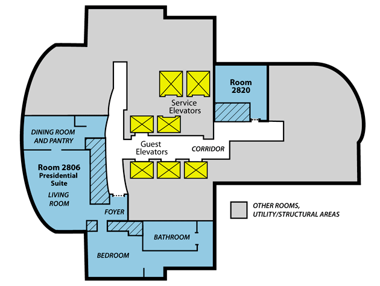
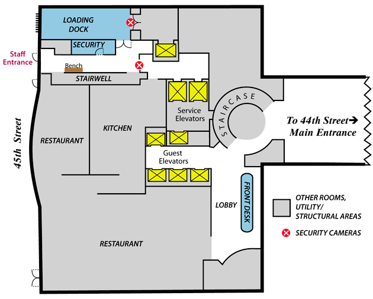

Le , sur West Street à Manhattan (New York), Brian Yearwood (responsable du service technique
chargé de la maintenance de l'Hôtel
Sofitel) vient sur le perron de tendre un téléphone au voiturier. Le voiturier écoute et parle puis, le coup de
fil terminé, rend le téléphone à Yearwood. Tous 2 rediscutent à plusieurs reprises sur le perron.
, le voiturier va au devant du taxi de Dominique Strauss-Kahn, qui arrive. , il court derrière le taxi
pour venir lui ouvrir la portière. À , Strauss-Kahn en sort et semble chercher dans sa
valise. Il entre dans l'hôtel. A , Yearwood rentre à son tour. Strauss-Kahn s'enregistre pour monter
dans sa suite (n° 2806 du 28ème étage "VIP" 3000 $ la nuit de l'hôtel), tandis que Yearwood
reste à attendre dans le même lobby. A , Strauss-Kahn monte dans sa suite, et Yearwood quitte le
lobby.
Le lendemain matin, la femme de chambre Nafissatou Diallo arrive à l'hôtel, prend un
rapide petit-déjeuner, et commence à faire les chambres du 11ème et de ce 28ème étage.
Selon des sources proches de Strauss-Kahn, une "amie" travaillant temporairement comme documentaliste au siège
de l'UMP à Paris aurait prévenu ce dernier par SMS qu'un courriel envoyé à son
épouse Anne Sinclair aurait été lu dans les bureaux du parti présidentiel Démenti par Jean-François Coppé.
De à , Strauss-Kahn appelle alors sa femme pour lui indiquer avoir un
gros problème : son téléphone BlackBerry (fourni par le FMI) a
peut-être été piraté et à son retour sur Paris son ami Stéphane Fouks (co-président d'Euro-RSCG) pourra venir
le faire expertiser chez lui Place des Vosges, ainsi que son iPad.

Plan du 28ᵉ étage du Sofitel de New York, avec la suite présidentielle, la chambre 2806, occupée par
Strauss-Kahn les 13 et 14 mai. Diallo entra au moins 3 fois dans la chambre voisine 2820 le 14 mai.
Entre , le service de chambre apporte un petit-déjeûner à Strauss-Kahn
dans sa suite.
, Diallo entre dans la chambre 2820. Elle indique que le client qui s'y trouvait n'ayant pas encore
quitté l'hôtel, elle repousse son nettoyage de cette chambre.
, Diallo entre à nouveau dans la chambre 2820. Le client aurait alors déclarer bientôt
quitter la chambre.
A , le client de la 2820 procède au règlement de sa chambre. Immédiatement après, sa
chambre est nettoyée par Nafissatou Diallo Lombard, Marie-Amélie: "Affaire DSK-Diallo : le démenti du groupe Accor", Le Figaro, 27 novembre 2011.
Elle laisse ses fournitures de nettoyage dans la chambre jusqu'à ce que la prochaine chambre soit disponible.
Strauss-Kahn prend sa douche.
, Syed Haque (service de chambre), entre dans sa suite pour récupérer le plateau du
petit déjeuner. Il s'annonce, sans réponse. Il aurait alors dit a Diallo que la chambre était vide.
, Diallo entre à son tour dans la suite, sans ses fournitures de nettoyage.
Post incident
, Strauss-Kahn appelle pendant 40 s sa fille Camille pour lui dire qu'il sera en
retard à leur déjeuner.
, Diallo entre avec sa carte magnétique dans la Chambre 2820, pour récupérer ses
fournitures de nettoyage. Elle ouvre aussi la porte de la suite de Strauss-Kahn, dans l'intention de la nettoyer,
dira-t-elle, laissant la porte ouverte.
, Strauss-Kahn sort de sa suite. A , on le voit procéder
aux formalités de départ de l'hôtel. Le portier lui hêle un taxi, raté, puis un autre pour se rendre au restaurant
McCormick & Schmick de la 6ème Avenue entre la 51ème et la 52ème rue.
Interview
, Diallo rencontre sa supérieure à qui elle dit devoir lui parler. Toutes les 2
entrent alors dans la Suite 2806 incriminée et, après avoir demandé si les clients avaient le droit d'abuser des
femmes de chambres, pressée de parler par sa supérieure, livre alors à sa supérieure le récit de son agression.
Cette dernière amène alors Diallo à Renata Markozani (responsable du nettoyage), qui écoute à nouveau son
témoignage et rentre dans la suite à . Cette dernière informe alors la sécurité de
l'hôtel et le personnel d'encadrement, qui à son tour prévient la sécurité de l'hôtel.

Plan du rez-de-chaussée du Sofitel de New York Video surveillance BFMTV, 8 décembre 2011
Yearwood arrive dans la suite. À cette même heure, le téléphone de Strauss-Kahn est
déconnecté, mais aussi son GPS interne.
Diallo arrive au bureau de Adrian Branch (chef de la sécurité du Sofitel),
accompagnée par Markozani.
, Strauss-Kahn, retardé par les embouteillages sur la 6ème avenue, arrive
au restaurant.
, Yearwood, revenant de la suite, rejoint Diallo dans le bureau de Branch. A ,
le Sofitel appelle John Sheehan (directeur de la sûreté et de la sécurité chez Accor), qui se trouve chez lui à
Washingtonville (New York). Il part de suite pour l'hôtel. À
, alors qu'il est en route, il envoie un SMS à Yearwood et à
à un autre à un destinataire inconnu.
Alerte
, Sheehan alerte le DPNY. A , les caméras
de sécurité filment Yearwood et Derek May, qui a accompagné Diallo au bureau de Branch, se taper mutuellement dans
les mains. May fait comme une danse de célébration pendant une dizaine de secondes Ces personnes ont catégoriquement nié que cet échange ait quelque lien que ce soit avec Strauss-Kahn, mais plutôt à un résultat sportif. Toutefois, aucune grande compétition sportive ne s'est terminée à cette heure-là. Une autre version indiquera qu'ils ne se souviennent pas des raisons de cette congratulation.
, Yearwood et son collègue sont rejoints par Florian Schutz, le responsable de
l'hôtel.
, 2 officiers de police en uniforme et inspecteurs du DPNY arrivent. Ils interrogent
Diallo dans une salle adjacente.
A , le repas avec sa fille terminé, Strauss-Kahn prend la route de l'aéroport et
constate qu'il a égaré son téléphone (sur lequel se trouvait le texto de son amie documentaliste à l'UMP). A
, il rappelle sa fille pour lui demander de vérifier s'il ne l'a pas oublié au restaurant.
Camille cherche sous la table, sans rien trouver. A , elle envoie un SMS à son père pour lui
indiquer.
, le personnel de sécurité de l'hôtel montre à Diallo une photo de Strauss-Kahn pour
lui demander de l'identifier.
, Strauss-Kahn, à l'approche de l'aéroport, tente d'appeler son téléphone perdu,
sans réponse.
, les policier emènent Diallo à l'hôpital voisin Saint Luke pour un examen.
, depuis l'aéroport, Strauss-Kahn appele l'hôtel pour demander si son téléphone
n'aurait pas été trouvé dans sa suite.
, un responsable de la sécurité de l'hôtel, après avoir consulté l'équipe
d'officiers de police et d'inspecteurs maintenant présente, rappelle Strauss-Kahn en présence de l'inspecteur John
Mongiello pour lui dire (faussement) que son téléphone a été retrouvé et lui proposer de lui rapporter à
l'aéroport. Strauss-Kahn répond que qu'il est sur le vol 23 de qui se trouve porte 4, au
Terminal Air France.
, Strauss-Kahn appelle l'hôtel et laisse un message sur un répondeur demandant quand
exactement l'employé de l'hôtel va lui rapporter son téléphone.
Arrestation
Aéroport
, la police portuaire l'arrête. Strauss-Kahn demande de quoi il s'agit et on lui
répond que ce n'est ni le moment ni l'endroit pour en discuter. , la police de
Manhattan indique à Strauss-Kahn qu'elle désire l'interroger sur un incident dans un hôtel de New York. ,
la police portuaire demande à Strauss-Kahn de vider ses poches. Des officiers le menottent. Il demande si les
menottes sont bien nécessaires et dit avoir une immunité diplomatique. Il demande aussi à parler au
consultat français et demande à nouveau à la police de quoi il s'agit. Il n'est pas interrogé sur l'incident.
, il demande a avoir les mains menottées devant plutôt que dans le dos.
Au poste
il est amené au poste de police. , Strauss-Kahn
demande à appeler son bureau pour annuler une réunion le matin suivant. La police ne l'interroge toujours pas. A
, il demande à aller aux toilettes et avoir un café. A ,
il appelle William Taylor (son avocat) et demande s'il a besoin d'un avocat. Il dit ne pas essayer d'invoquer son
statut diplomatique.
, le Sofitel prévient de l'arrestation une heure auparavant de Strauss-Kahn à
bord d'un avion d'Air France à New York. Accor, par la voix René-Georges Querry (son chef de la sécurité
de l'époque), alerte alors Ange Mancini (coordonnateur national du renseignement à l'Elysée), qu'il connait depuis
40 ans "Affaire DSK : Epstein réclame la diffusion de la vidéosurveillance", Le Nouvel Observateur / AFP, 28 novembre 2011.
, les inspecteurs lui demande s'il veut leur parler d'un incident à l'hôtel. Mon
avocat m'a dit ne ne pas parler. J'étais prêt à parler, répond-t-il.
Le , Strauss-Kahn plaide non coupable des 7 chefs d'accusation Acte sexuel criminel au 1er degré, tentative de viol au 1er degré, agression sexuelle au 1er degré, emprisonnement illégal au 2nd degré, attouchements non consentis et agression sexuelle au 3ème degré,
dont tentative de viol (pénétration), acte sexuel illégal (fellation forcée) et séquestration.
Enquête
Diallo déclarera à plusieurs reprises aux procureurs qu'après avoir été agressée par Strauss-Kahn, elle se serait
immédiatement échappée de la suite de l'accusé et serait partie à l'extrêmité du couloir du 28ème étage. Après avoir craché sur le tapis dans le couloir du 28ème étage, elle serait restée là, apeurée,
jusqu'à rencontrer par hasard sa supérieure. Interrogé par les procureurs sur la raison pour laquelle elle était
restée dans ce couloir plutôt que de se réfugier dans une chambre vide de cet étage et de téléphoner à ses
supérieurs ou à la sécurité, elle a déclaré que toutes les autres chambres de l'étage avaient des pancartes "ne
pas déranger".
Le , en présence de son avocat, Diallo admet être en fait directement partie dans une
autre chambre (2820) pour finir de la nettoyer (passer l'aspirateur au sol, nettoyer les miroirs et autres fournitures de la chambre),
puis être retournée dans la suite de Strauss-Kahn qu'elle avait commencé à nettoyer aussi. C'est en allant à une
armoire à linge dans le couloir de l'étage pour récupérer des fournitures qu'elle aurait en fait rencontré sa
supérieure, et que toutes les 2 seraient ensuite revenues dans la Suite 2806. Plutôt que de parler immédiatement
d'une agression de l'accusé, Diallo aurait alors posé à sa supérieure la question de savoir si des clients étaient
autorisés à forcer les membres du personnel, et ne rapporta l'incident que lorsque sa supérieure la pressa de
parler.
Le , Diallo reconnaît avoir menti sur certains points devant le Grand Jury. Strauss-Kahn
est libéré sur parole : sa caution lui est rendue et il n'a plus de bracelet électronique. En revanche, il ne peut
toujours pas quitter le territoire américain.
Le , Diallo dit avoir en fait nettoyé la Chambre 2820 plutôt le matin du
. Immédiatement après l'incident, elle aurait quitté la Suite de de Strauss-Kahn et couru
jusqu'au coin du couloir devant la Chambre 2820. Après avoir vu l'accusé partir dans l'ascenseur, elle serait
entrée dans la Chambre 2820 un instant pour récupérer des fournitures de nettoyage.
Diallo quittant un bâtiment d'état le AP Photo/Seth Wenig
Après le rejet de la demande d'immunité de Strauss-Kahn en tant que président du FMI, des discussions entre les
avocats de ce dernier et ceux de Diallo commencent sérieusement le . Le
, le procureur recommande l'abandon des charges contre Strauss-Kahn suite au manque de
crédibilité de Diallo "Recommendation for Dismissal", Supreme Court of the State of New York, Country of New York: Part 51 - The People of the State of New York: Central Clerk's Office, 2011-08-22.
Le , toutes les charges sont abandonnées.
Post-arrestation
Strauss-Kahn s'expliquant au journal de TF1
De retour à Paris. Invité au journal de de TF1, Strauss-Kahn
reconnaît une faute morale.
Fin novembre, un journaliste avance des éléments en faveur d'un complot contre Strauss-Kahn Epstein, Edward Jay: "What Really Happened to Strauss-Kahn?" The New York Review, 2011-12-22.
Le , les images de video surveillance de l'hôtel sont révélées sur BFM TV. Le groupe
hôtelier Accor dénonce la diffusion d'"extraits qui exposent inutilement les membres de l'équipe de
l'hôtel à la curiosité médiatique"Affaire DSK : Position Accor", Accor, 2011-12-08.
Transaction
Diallo arrivant au tribunal avec son avocat le jour de la signature de l'accord
Par la suite, dans le cadre d'une poursuite au civil, un accord financier est négocié entre les avocats de Diallo
et Strauss-Kahn pour mettre un terme aux poursuites.
Le , l'accord est annoncé. On parle de 4,5 millions € (6 millions $), sans confirmation. Par
la suite on parle d'un peu plus de 1 million € (1,5 millions $), dont 30% pour ses avocats Tabet, Marie-Christine: "Un million de dollars pour Nafissatou Diallo", JDD, 2013-01-19.